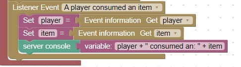

<h1>Handle the player consuming an item</h1>

This code will write to the server console when a player consumes an item<br>
</br>
Note: You must be hungry to consume an item<br>
This command will set your hunger: <br>
/js self.setExhaustion(100)

<hr>
<center></center>